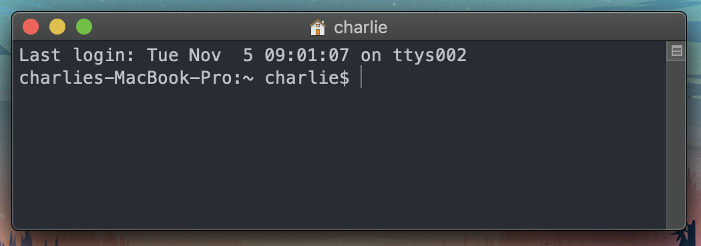
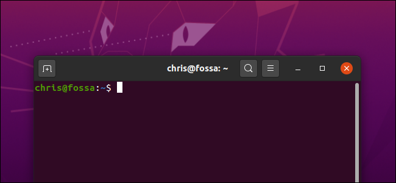

Getting Started¶
The first thing you need to get started on running your first commands on a Unix terminal, or an emulator. A Unix terminal is a native application on Mac OS and Linux operating systems. If you only have access to a Windows operating computer, dont worry, you can still do a dual booth with Ubuntu, install a Unix terminal emulator or just run this tutorial interactively on your web browser. The particular needs for your research project will depend on your mentor so make sure to ask!
Setting up and accessing your terminal¶
Open a Terminal on Mac¶

On your Mac, do one of the following:
Click the Launchpad icon in the Dock, type Terminal in the search field, then click Termninal.
In the Finder, open /Applications/Utilities folder, then double-click Terminal.
Open a Terminal on Ubuntu Linux¶

If you are running Ubuntu 20.04 LTS or later, you can launch a Terminal Window by:
Pressing CTRL+Alt+T. A GNOME Terminal window will pop right up.
You can also launch a terminal from the Dash (The Icon on your taskbar that looks like a grid of white points). Type Terminal and press Enter to find and launch the Terminal shortcut.
You can also press Alt+F2 to open the Run a Command dialog. type gnome-terminal here and press Enter to launch a terminal window.
Accessing a Unix Shell on Windows¶
There are two ways to access a unix shell in a Windows environment:
By installing Ubuntu on your computer (or any other Linux distribution) and run on a dual-booth fashion. This way you get to keep both operating systems. Instructions for installing Ubuntu on your Windows computer can be found [here][https://ubuntu.com/tutorials/ubuntu-on-windows#4-install-ubuntu-for-windows-10].
You can run an emulator such as Cygwin inside your Windows environment. Instructions can be found [here][https://www.cygwin.com].
Running code on your web browser¶
If none of the above options worked for you, or if you want to follow along without the risk of damaaging your personal computer, dont worry, most sections will allow you to run code and see outputs on your web browser without leaving the page. Interactivity is provided by a kernel running on the public MyBinder service.
For an example, click the –> Live Code button above on this page, and run the code below.
import numpy as np
import matplotlib.pyplot as plt
plt.ion()
x = np.arange(500)
y = np.random.randn(500)
fig, ax = plt.subplots()
ax.scatter(x, y, c=y, s=x)
<matplotlib.collections.PathCollection at 0x158f8dbe0>